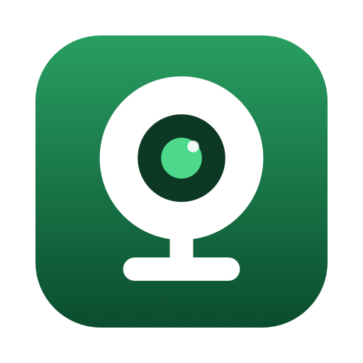

Green Room
Camera, mic, speakers.
Ready before you go on.
A free Mac menu bar app that checks all three in one click.
Not ready
Camera
Cam Link 4K · External
Microphone
MacBook Pro Microphone · Built-in
Speaker
Studio Monitors · USB
Usually here, missing now
ATR2100x-USB Microphone
Not plugged in · last seen yesterday 12:40 PM